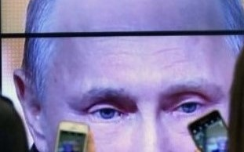

LuxAdi

A much-criticised "foregin agent" law is expanded to target certain journalists and bloggers.
Germany expels Russia diplomatc over Berlin murder
The pair are told to leave months after a Georgian national was shot dead in a park.
Law experts tell committee he should be removed
There is no doubt that President Donald Trump's actions require him to be removed from office